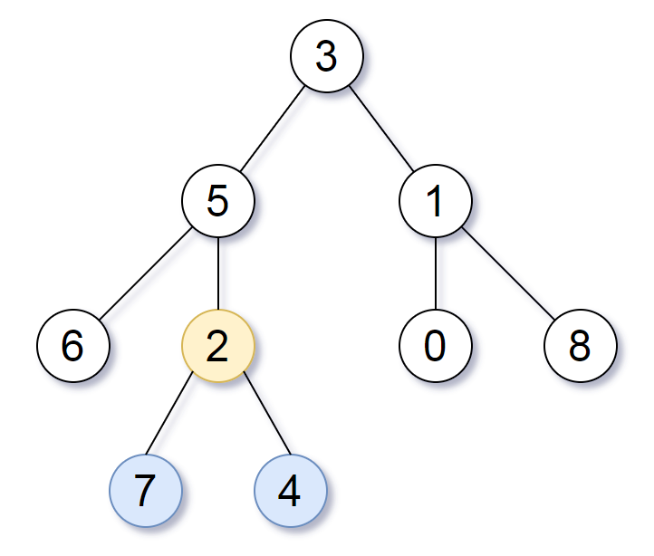

| Category | Difficulty | Likes | Dislikes |
|---|---|---|---|
| Algorithms | Medium | 2596 | 945 |
hash-table | tree | depth-first-search | breadth-first-search | binary-tree
facebook | google | amazon
Given the root of a binary tree, return the lowest common ancestor of its deepest leaves.
Recall that:
0. if the depth of a node is d, the depth of each of its children is d + 1.S of nodes, is the node A with the largest depth such that every node in S is in the subtree with root A.
Example 1:

Input: root = [3,5,1,6,2,0,8,null,null,7,4]
Output: [2,7,4]
Explanation: We return the node with value 2, colored in yellow in the diagram.
The nodes coloured in blue are the deepest leaf-nodes of the tree.
Note that nodes 6, 0, and 8 are also leaf nodes, but the depth of them is 2, but the depth of nodes 7 and 4 is 3.Example 2:
Input: root = [1]
Output: [1]
Explanation: The root is the deepest node in the tree, and it's the lca of itself.Example 3:
Input: root = [0,1,3,null,2]
Output: [2]
Explanation: The deepest leaf node in the tree is 2, the lca of one node is itself.
Constraints:
[1, 1000].0 <= Node.val <= 1000
Note: This question is the same as 865: https://leetcode.com/problems/smallest-subtree-with-all-the-deepest-nodes/